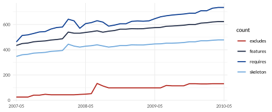
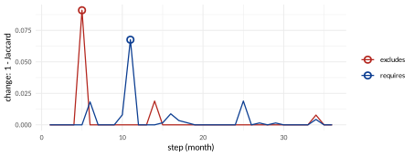
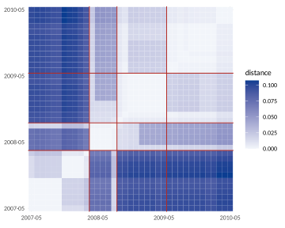
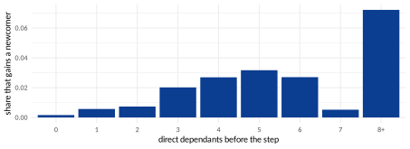

Following a model through time
Every version of a model is a run of vp_generate(), and
vp_read_history() loads them all (Reading the results).
Features are matched by name. Links are compared only among the features
that can vary in both versions, the kept ones.
The operations of this section answer four kinds of question:
| Kind of question | Operations |
|---|---|
| Between two versions | What changed (vp_compare), in what was
written (on the minimal forms), drawn (vp_plot_compare);
how far each written change reaches (vp_ripple); what to
retest (vp_interaction_changes); which features were
renamed (vp_rename_candidates). |
| Over a whole history | Sizes and changes step by step, growth laws, the shape
of the model over time (vp_history_apply), the type of each
step, stable hubs and disruptions, eras, communities over time. |
| About features through time | Where new features attach, hotspots
(vp_feature_churn), features that change together
(vp_co_change), how long new links last and how features
move between states, features that flip. |
| Looking ahead | Predicting which features disappear, and the size of the next versions. |
The two histories of the vignettes play different roles: the seven Mi Bands are few and very different, which suits the questions about two versions; the 37 months of BusyBox are many and alike, which suits statistics over a history.
What changed between two versions
Function: vp_compare()
The question. What did the four constraints added to the planned Mi Band 3 do?
planned <- vp_read("planned/miband3_planned")
vp_compare(planned, band) |>
select(graph, kept, gained, lost, jaccard, spearman)
#> # A tibble: 3 x 6
#> graph kept gained lost jaccard spearman
#> <chr> <int> <int> <int> <dbl> <dbl>
#> 1 requires 11 11 0 0.476 0.867
#> 2 excludes 11 7 0 0.3 NA
#> 3 atleastone 11 3 0 0 NAFour constraints, 11 new dependencies and 7 new conflicts, nothing
lost. jaccard is the links in both versions over the links
in either (1 when nothing changed); spearman compares the
order of the kept features by how many features require them (1 for the
same order). These are also the numbers of the command
strong4vm diff. vp_changed_links() lists the
links, vp_top_movers() the features with the most changes,
and vp_state_moves() the features that appeared,
disappeared, or moved between variable, core and dead:
m3 <- history$model[[4]]
m4 <- history$model[[5]]
vp_changed_links(m3, m4, "requires") |> filter(change == "lost")
#> # A tibble: 10 x 3
#> from to change
#> <chr> <chr> <chr>
#> 1 Screen OLED lost
#> 2 Screen CapacityButton lost
#> 3 TouchScreen OLED lost
#> 4 TouchScreen CapacityButton lost
#> 5 MovementFilter OLED lost
#> 6 MovementFilter CapacityButton lost
#> 7 BLEv40 OLED lost
#> 8 BLEv40 CapacityButton lost
#> 9 BLEv42 OLED lost
#> 10 BLEv42 CapacityButton lost
vp_top_movers(m3, m4, "requires", n = 3)
#> # A tibble: 3 x 4
#> feature gained lost total
#> <chr> <int> <int> <int>
#> 1 TouchScreen 4 2 6
#> 2 BLEv42 3 2 5
#> 3 CapacityButton 0 5 5
vp_state_moves(m3, m4)
#> # A tibble: 6 x 3
#> feature before after
#> <chr> <chr> <chr>
#> 1 AMOLED absent variable
#> 2 CapacitivitySensing absent variable
#> 3 FullColor absent variable
#> 4 Gyroscope absent variable
#> 5 ProximitySensor absent variable
#> 6 BLEv50 absent variableFrom the Mi Band 3 to the Mi Band 4 every lost dependency points to the OLED panel or the capacity button: the Mi Band 4 brought a second kind of screen, so a screen no longer means OLED.
Why it matters. Product lines evolve with every release, and each change can remove products that customers rely on, or allow combinations that were never tested. Comparing the graphs of two versions shows, without reading every changed constraint, which relationships the release added or removed, and Jaccard and Spearman sum it up in two numbers that can be tracked release after release.
Limits: what this cannot tell you
A change that only touches a rule over three or more features leaves every graph as it was:
vp_compare()reports Jaccard 1 while the model may have lost products (One rule, three features, and every function).Features are matched by name: a renamed feature is one removed and one added, and its links drop out of the comparison.
With fewer than two kept features there is nothing to compare: Jaccard is 1 by convention and Spearman
NA.
Comparing what was written
Function: vp_compare on vp_minimal()
The question. Did the new version change what was written, or only its consequences?
vp_compare() is a measure, so it compares the graphs it
is given. Given two minimal forms, it compares the written
structure:
vp_compare(vp_minimal(planned), vp_minimal(band)) |>
select(graph, gained, lost, jaccard)
#> # A tibble: 3 x 4
#> graph gained lost jaccard
#> <chr> <int> <int> <dbl>
#> 1 requires 4 0 0.333
#> 2 excludes 2 2 0.2
#> 3 atleastone 1 0 0In the complete graphs the planned band only gained (11 dependencies,
7 conflicts). In the minimal form it also lost two primitive
conflicts: the new constraints made them consequences of others. The
minimal form is the natural target for growth laws and link prediction,
where each new link should be one decision: vp_growth(),
vp_history_changes() and the other functions of this
section work on a history of minimal forms, made with
mutate(history, model = lapply(model, vp_minimal)).
Why it matters. A release can change a few written constraints and many consequences. Distinguishing the two tells whether a release was a small edit with large effects, which deserves more testing than its diff suggests, or a large rewrite.
Limits: what this cannot tell you
The minimal form approximates what was written (The minimal form); a change of the written constraints that leaves the minimal form as it was is invisible, and so is, as always, a change that touches only rules over three features.
Seeing what changed
Function: vp_plot_compare()
The question. Where in the model are the changes?
vp_plot_compare() draws two versions in one picture (Drawing the graphs explains
the drawings): links kept in grey, gained thick, lost dashed orange; new
features in yellow, removed features with a dashed border. It compares
the minimal forms, so it shows what was written, and by default only the
features touched by a change:
vp_plot_compare(
history$model[[4]],
history$model[[5]],
"figures/evolution-miband3_to_4.svg"
)
Read the orange arrows as in the previous operation: in a minimal
form, an arrow also disappears when it becomes a consequence of others.
TouchScreen
Screen is gone because the touch screen now requires
BLEv42, which requires the screen: the dependency is still
there, no longer written. With minimal = FALSE the drawing
compares the complete graphs, where a lost arrow is a dependency truly
lost.
Why it matters. A picture of a release lets a reviewer see in seconds which parts of the model moved, instead of reading a list of changed links.
Limits: what this cannot tell you
The drawing shows one graph at a time
(graph = "excludes" for conflicts) and only links between
two features. Like every comparison, it matches features by name.
How far a written change reaches
Function: vp_ripple()
The question. When someone writes one constraint, how many relationships change?
A written change is a change of the minimal form; its consequences are the changes of the complete graphs. Their ratio is the ripple of a step:
vp_ripple(history)
#> # A tibble: 6 x 8
#> step from to written_gained written_lost gained lost ripple
#> <int> <fct> <fct> <int> <int> <int> <int> <dbl>
#> 1 1 miband1 miband1s 0 0 0 0 NA
#> 2 2 miband1s miband2 0 0 0 0 NA
#> 3 3 miband2 miband3 7 2 20 0 2.22
#> 4 4 miband3 miband4 2 1 19 12 10.3
#> 5 5 miband4 miband6 6 4 68 8 7.6
#> 6 6 miband6 miband8 1 0 15 8 23
vp_ripple(busybox) |> arrange(desc(written_gained + written_lost)) |> head(3)
#> # A tibble: 3 x 8
#> step from to written_gained written_lost gained lost ripple
#> <int> <fct> <fct> <int> <int> <int> <int> <dbl>
#> 1 11 2008-03 2008-04 0 7 0 41 5.86
#> 2 10 2008-02 2008-03 1 5 0 5 0.833
#> 3 6 2007-10 2007-11 2 3 10 0 2From the Mi Band 3 to the 4, three written changes changed 31 relationships (ripple 10.3). From the Mi Band 6 to the 8, one written requirement (SpO2 requires Photoplethysmogram) changed 23: everything the new arrow brings in through chains, and every conflict that its new requirements inherit (property P2). BusyBox, whose features are loosely tied, has a typical ripple of 1: most edits stay where they are written.
Why it matters. The ripple measures how coupled a
model is in practice: a high ripple means that an
innocent-looking edit changes the products in places far from the edit.
A rising ripple along a history is a warning that the model is becoming
harder to change safely. Steps with a high ripple are the ones to review
with vp_changed_links(old, new), which lists every
consequence.
Limits: what this cannot tell you
“Written” is the minimal form, with the limits of comparing what was
written (above). Links of features added or removed are left out, as in
vp_compare().
What to retest after a change
Function: vp_interaction_changes()
The question. A new version is out. Which of the old tests are now invalid, and which new interactions are untested?
Among the features that can vary in both versions, a combination of
two features (both selected, one without the other, neither) is possible
exactly when no link forbids it: that is property P3. So the changed
links give, exactly, every combination of two features that the step
made possible or impossible. With the test sample of the old version
(the five bands of Testing),
in_sample counts how many tests have each combination:
# sample: the 5 tests of the Mi Band 3 (Section "Testing")
changes <- vp_interaction_changes(
history$model[[4]],
history$model[[5]],
sample
)
changes |> count(change, tested = in_sample > 0)
#> # A tibble: 3 x 3
#> change tested n
#> <chr> <lgl> <int>
#> 1 now impossible FALSE 4
#> 2 now impossible TRUE 15
#> 3 now possible FALSE 12
changes |> filter(change == "now impossible", in_sample > 0) |> head(4)
#> # A tibble: 4 x 7
#> feature_1 value_1 feature_2 value_2 change graph in_sample
#> <chr> <lgl> <chr> <lgl> <chr> <chr> <int>
#> 1 TouchScreen TRUE HeartRateSensor FALSE now impossible requires 1
#> 2 TouchScreen TRUE BLEv42 FALSE now impossible requires 2
#> 3 ContactlessPayment TRUE TouchScreen FALSE now impossible requires 1
#> 4 ContactlessPayment TRUE HeartRateSensor FALSE now impossible requires 1
changes |> filter(change == "now possible") |> head(4)
#> # A tibble: 4 x 7
#> feature_1 value_1 feature_2 value_2 change graph in_sample
#> <chr> <lgl> <chr> <lgl> <chr> <chr> <int>
#> 1 Screen TRUE OLED FALSE now possible requires 0
#> 2 Screen TRUE CapacityButton FALSE now possible requires 0
#> 3 TouchScreen TRUE OLED FALSE now possible requires 0
#> 4 TouchScreen TRUE CapacityButton FALSE now possible requires 0The two lists are the test plan of the new version:
Now impossible, and in some test: those tests describe bands that the Mi Band 4 does not allow. Fifteen combinations are of this kind; for example, contactless payment without the touch screen, which one of the five tests has, and NFC without BLEv42, which two have. They must be fixed or dropped.
Now possible: new interactions. No old test can have them (they were impossible), so each one is untested: a screen without OLED, a touch screen without the capacity button, and so on (12 combinations). New tests must cover them.
vp_pick_sample()picks configurations that do (Testing).
The features new in the Mi Band 4 bring their own combinations, which
are all untested: vp_combinations_to_cover() counts them,
and vp_uncovered() on the new version lists them once the
sample has columns for them.
Why it matters. Regression testing of a product line is expensive: every release would call for testing everything again. Knowing exactly which interactions became possible (and need new tests) and which became impossible (and invalidate old tests) focuses the campaign on what the release really changed.
Limits: what this cannot tell you
Exact for combinations of two features that can vary in both
versions; a test that breaks a rule over three features is not caught
(use vp_sample_violations() too, and in the end the
solver). A feature that moved between variable, core and dead is not a
kept feature: its combinations changed, but are not listed here (see
vp_state_moves()).
Features that were probably renamed
Function: vp_rename_candidates()
The question. A feature disappeared and another appeared: is it the same one, renamed?
Features are matched by name, so a rename breaks every comparison of
this section. The function vp_rename_candidates() pairs
each removed feature with the added feature whose links to the kept
features are most alike, one to one (a maximum matching in a bipartite
graph), and gives the similarity of the names beside it:
vp_rename_candidates(busybox$model[[31]], busybox$model[[32]])
#> # A tibble: 4 x 4
#> old new similarity name_similarity
#> <chr> <chr> <dbl> <dbl>
#> 1 CONFIG_APP_DUMPLEASES CONFIG_DUMPLEASES 1 0.810
#> 2 CONFIG_APP_DHCPRELAY CONFIG_DHCPRELAY 1 0.8
#> 3 CONFIG_APP_UDHCPC CONFIG_UDHCPC 1 0.765
#> 4 CONFIG_APP_UDHCPD CONFIG_UDHCPD 1 0.765The two columns are computed as follows:
similaritycompares links. Each feature is described by its links to the kept features (those that can vary in both versions), each one labelled with its kind and direction: “needs x”, “needed by x”, “excludes x” and, when the model has them, “or x” (at least one of the two). The similarity of a removed feature and an added one is the Jaccard index of their two sets of labels: the labels they share divided by all the distinct labels of either. It is 1 when the two features have exactly the same links, and 0 when they share none, or when neither has any. Pairs belowthreshold(0.5 by default) are not considered; among the others, the matching keeps each feature in at most one pair and picks the pairs whose total similarity is largest.name_similaritycompares the names, after the pairs are made, and does not take part in the matching. It is , where is the edit distance between the two names (the fewest characters to insert, delete or replace to turn one into the other) and the length of the longer name: 1 when the names are equal, near 0 when they have little in common. For example,CONFIG_APP_UDHCPCbecomesCONFIG_UDHCPCby deleting four characters, and the longer name has 17, so .
The rows come sorted by similarity, then by
name_similarity.
In 2009-12 the options of the DHCP applets lost their prefix
APP_: four renames, found by their links alone, and
confirmed by their names.
From candidates to renames. vp_rename()
gives the features of one version the names they have in the other,
before comparing. It takes the renames as a named vector, as a data
frame with old and new (such as the answer of
vp_rename_candidates()), or as a file.
vp_rename_candidates() writes that file when it is given
file: one line per pair, the old name, a tab and the new
name (a tab, so that names with spaces work too), after a first line,
starting with #, that records the thresholds used (the
command strong4vm diff --rename reads the same file). Only
the pairs whose name_similarity is at least
name_threshold (0.7 by default) are written: those
confirmed both by their links and by their names. The answer of the
function is the same, with or without file, so the pairs
left out can still be read in it and added by hand:
dir.create("evolution", showWarnings = FALSE)
vp_rename_candidates(
busybox$model[[31]],
busybox$model[[32]],
file = "evolution/renames.txt"
) |>
invisible()
cat(readLines("evolution/renames.txt"), sep = "\n")
#> # renames from vp_rename_candidates(): link similarity >= 0.5, name similarity >= 0.7
#> CONFIG_APP_DUMPLEASES CONFIG_DUMPLEASES
#> CONFIG_APP_DHCPRELAY CONFIG_DHCPRELAY
#> CONFIG_APP_UDHCPC CONFIG_UDHCPC
#> CONFIG_APP_UDHCPD CONFIG_UDHCPD
old <- busybox$model[[31]]
new <- busybox$model[[32]]
vp_compare(old, new) |> select(graph, kept, added, removed, gained, lost)
#> # A tibble: 2 x 6
#> graph kept added removed gained lost
#> <chr> <int> <int> <int> <int> <int>
#> 1 requires 596 4 4 0 0
#> 2 excludes 596 4 4 0 0
vp_compare(vp_rename(old, "evolution/renames.txt"), new) |>
select(graph, kept, added, removed, gained, lost)
#> # A tibble: 2 x 6
#> graph kept added removed gained lost
#> <chr> <int> <int> <int> <int> <int>
#> 1 requires 600 0 0 0 0
#> 2 excludes 600 0 0 0 0Without the renames, the comparison sees four features removed and
four added; with them, the four are kept, and their links are compared
as those of one feature. Raise name_threshold to write only
the surest pairs (with 0.8, the two UDHCP pairs, at 0.765,
would be left out); lower it to 0 to write every pair, whatever its
names, when names are known to have changed completely.
threshold still decides which pairs are candidates at all,
by their links.
Why it matters. Renames are frequent in real product lines, and every comparison by name mistakes a rename for a removal and an addition: links are lost, histories break, statistics are biased. Pairing renames first makes every other comparison of this section trustworthy.
Limits: what this cannot tell you
A candidate, to be confirmed by a person: two different features can have the same links (in this history, with a similarity of 0.5, a few pairs are clearly not renames), and a feature renamed and changed at once may be missed. Features with no link to the kept features cannot be matched at all.
Sizes and changes, step by step
Function: vp_history_changes()
The question. How did the model grow, and which steps changed it most?
vp_history_sizes() gives the size of every version,
vp_history_changes() what changed at every step. Both take
a history, so vp_read_history() must be called first:
busybox is the history read in Graphs made by version 1 of
Strong4VM, one version per month. On BusyBox, with a chart made with
ggplot2:
# busybox: read with vp_read_history() (Section "Graphs made by version 1...")
sizes <- vp_history_sizes(busybox)
sizes |>
select(version, features, requires, excludes, skeleton) |>
slice(c(1, 13, 25, 37))
#> # A tibble: 4 x 5
#> version features requires excludes skeleton
#> <fct> <int> <int> <int> <int>
#> 1 2007-05 434 462 25 347
#> 2 2008-05 537 607 48 428
#> 3 2009-05 575 646 98 446
#> 4 2010-05 623 735 131 478
p <- sizes |>
tidyr::pivot_longer(
c(features, requires, skeleton, excludes),
names_to = "count"
) |>
ggplot(aes(version, value, colour = count, group = count)) +
geom_line(linewidth = 0.8) +
scale_x_discrete(breaks = levels(sizes$version)[c(1, 13, 25, 37)]) +
labs(x = NULL, y = NULL)
changes <- vp_history_changes(busybox)
changes |>
filter(graph == "requires") |>
arrange(jaccard) |>
select(from, to, gained, lost, jaccard) |>
head(3)
#> # A tibble: 3 x 5
#> from to gained lost jaccard
#> <fct> <fct> <int> <int> <dbl>
#> 1 2008-03 2008-04 0 41 0.932
#> 2 2009-05 2009-06 12 0 0.981
#> 3 2007-10 2007-11 10 0 0.982Why it matters. The sizes and changes of every step are the raw history of a product line: when it grew, when it was reorganised, when a release touched far more than usual. Everything else in this section starts from them.
Limits: what this cannot tell you
The same as for two versions, at every step.
Growth laws
Function: vp_growth()
The question. When the number of features doubles, by how much do the links grow?
vp_growth() takes logarithms of both counts: for each
kind of link it fits the straight line
by least
squares, one point per version. A straight line on these log-log axes is
a power law,
,
and the slope
is its exponent: when the features double, the links are multiplied by
.
A slope of 1 means links grow in step with the features (twice the
features, twice the links); 2, that they grow with the square of the
features (twice the features, four times the links); above 1, faster
than the features Leskovec et al. (2005).
Note that the line is drawn against the number of features, not against
time: links growing exponentially with the features would not give a
straight line here but one bending upwards (a straight line on
against
itself, not its logarithm). Growth over time is what
vp_history_sizes() shows.
vp_growth(busybox)
#> # A tibble: 4 x 3
#> links slope r_squared
#> <chr> <dbl> <dbl>
#> 1 requires 1.01 0.908
#> 2 excludes 4.88 0.842
#> 3 skeleton 0.823 0.978
#> 4 primitive_conflicts 1.40 0.736In BusyBox the dependencies grow in step with the features (slope
1.01), but the conflicts much faster (4.88). r_squared says
how well a straight line fits (1 is perfect).
The logarithm of 0 does not exist, so a version with no features, or
with none of the links of a kind, is left out of the line of that kind;
with fewer than three versions left, slope and
r_squared are NA. On the Mi Bands 1 to 4, for
example, the Mi Band 1 has no features that can vary, and only the Mi
Bands 3 and 4 have a skeleton, so the skeleton has two points and an
NA slope, while the requirements, with three points, do get
one.
Why it matters. Whether links grow faster than features decides whether a product line becomes harder to manage as it grows: a slope above 1 means that every new feature adds more than its share of dependencies or conflicts, so the effort of configuring, testing and maintaining grows faster than the line itself.
Limits: what this cannot tell you
A slope fitted on one history of a few years; the versions are not
independent of one another, and r_squared says nothing
about the future. Three points are enough to get a slope, but not to
trust it. A power law is assumed: r_squared near 1 says the
points lie near a line on log-log axes, not that no other curve fits as
well. With little growth (BusyBox grows from 434 to 623 features) a
slope is fragile.
The shape of a model over time
Function: vp_history_apply()
The question. Does the model get deeper, wider, more concentrated, harder to explain?
Any measure of the vignettes can be followed version by version:
vp_history_apply(history, f, ...) applies a function to
every version and binds the answers in one tibble. It works in three
steps:
Call. A history is a tibble with one row per version, oldest first, and the models in the column
model(Reading the results). For each row,fis called with that model as its first argument,f(history$model[[k]], ...): the arguments afterfare passed on, unchanged, to every call.fcan be a function of the vignettes (vp_depth, or its name as a string,"vp_depth") or a function written on the spot,function(m) ..., to combine several measures or post-process one.-
Turn the answer into rows. What
freturns decides the columns:one number without a name: one row, with the number in a column
value;a named vector, such as
c(depth = 3, width = 5): one row, one column per name;a tibble or data frame: its rows and columns, as they are, so a version can give any number of rows, zero included.
Anything else (a list,
NULL, a vector of several numbers without names) stops with an error that names the version. Bind. A column
version(a factor, in the order of the history) is put in front of the rows of each version, and the blocks are bound one under the other withdplyr::bind_rows(). Columns are matched by name: if some version lacks a column, it getsNAthere.
So it is lapply() over the models followed by
bind_rows(), with the version kept. A single number, for
the seven Mi Bands (the history read in Reading the results):
vp_history_apply(history, vp_depth)
#> # A tibble: 7 x 2
#> version value
#> <fct> <int>
#> 1 miband1 0
#> 2 miband1s 1
#> 3 miband2 1
#> 4 miband3 3
#> 5 miband4 4
#> 6 miband6 5
#> 7 miband8 6A function that returns a tibble, with an argument passed on through
...: the most decisive feature of each version
(vp_most_decisive(m, n = 1)):
vp_history_apply(history, vp_most_decisive, n = 1)
#> # A tibble: 6 x 5
#> version feature decision_power requires excludes
#> <fct> <chr> <dbl> <int> <int>
#> 1 miband1s HeartRateSensor 0 0 0
#> 2 miband2 Screen 0.286 2 0
#> 3 miband3 MovementFilter 0.7 4 3
#> 4 miband4 BT40 0.812 0 13
#> 5 miband6 MovementFilter 0.95 4 15
#> 6 miband8 MovementFilter 1 4 18The Mi Band 1 has no row: it has no feature that can vary, so
vp_most_decisive() returns an empty tibble, and an empty
block adds nothing. Keep this in mind when counting versions in the
answer; a function that returns a number never loses a version.
A named vector gives a wide table, one row per version, which is the most convenient form for a set of measures. The shape measures of Levels, depth and the longest chain and Width and chains, for the seven Mi Bands:
shape <- vp_history_apply(history, function(m) {
c(
depth = vp_depth(m),
decision_chain = nrow(vp_longest_decision_chain(m)),
width = vp_width(m),
free = nrow(vp_largest_free_set(m)),
gini = round(vp_gini(vp_feature_table(m)$required_by), 2)
)
})
shape
#> # A tibble: 7 x 6
#> version depth decision_chain width free gini
#> <fct> <dbl> <dbl> <dbl> <dbl> <dbl>
#> 1 miband1 0 0 0 0 0
#> 2 miband1s 1 1 1 1 0
#> 3 miband2 1 2 6 4 0.62
#> 4 miband3 3 3 5 4 0.65
#> 5 miband4 4 5 9 5 0.68
#> 6 miband6 5 6 6 3 0.5
#> 7 miband8 6 7 7 3 0.58From the Mi Band 2 on, the band gets deeper at every generation, from
one layer to six, while its width stays between five and nine: the
product line grows by stacking specialisations (on the Mi Band 8,
Bluetooth 5.2 needs SpO2, which needs the photoplethysmogram, which
needs the AMOLED screen), not by adding independent options. The free
features fall from five (Mi Band 4) to three: more and more of the
options are tied to one another, and on four of the bands the longest
chain of decisions outgrows the depth: conflicts lengthen it. The
function returns a tibble, so the shape can be drawn with ggplot2 like
any other: tidyr::pivot_longer(shape, -version) puts the
measures one under the other, ready for
ggplot(aes(version, value, colour = name, group = name)).
f runs once per version, so its cost is multiplied by
the length of the history: a measure that takes a few seconds on one
version of BusyBox takes minutes on its 37 versions. Putting several
measures in one f, as above, keeps them in one table; it
saves time only when the measures share work inside f.
Why it matters. Trends are what a single version cannot show: a model getting deeper becomes harder to explain and to configure; one whose free features shrink offers fewer real choices; one whose Gini grows leans on fewer foundations. Following them warns of problems before they become visible in any single release.
Limits: what this cannot tell you
A measure followed over time keeps the limits it has on one version;
and a change of the measure can come from features added or removed, not
only from a change of the relationships. Compare the shape with the
sizes (vp_history_sizes()) before reading a trend.
The type of each step
Function: vp_edit_type()
The question. Did a version restrict the model, relax it, or both?
Thüm et al. classify an edit by what it does to the products: a specialisation removes products, a generalisation adds them, an arbitrary edit does both, a refactoring changes nothing Thüm et al. (2009). Among the kept features, gaining links only is necessary for a specialisation, losing links only for a generalisation, and no change at all for a refactoring:
vp_edit_type(busybox) |> count(type)
#> # A tibble: 4 x 2
#> type n
#> <chr> <int>
#> 1 arbitrary edit 1
#> 2 generalisation? 4
#> 3 refactoring? 23
#> 4 specialisation? 8In 36 monthly steps of BusyBox, 23 change no relationship at all, and only one both adds and removes links, which makes it certainly an arbitrary edit.
How it works. For each step, from one version to the
next, vp_edit_type() does four things:
Complete graphs. Models read in their minimal form are expanded first (
vp_expand()), because the products are decided by all the relationships, not by those written: a link dropped from the minimal form can still be implied by others, and is then not lost.Kept features. Links are compared only among the features that can vary in both versions, as in
vp_compare()(What changed between two versions): a feature added, removed, or turned core or dead is left out.Count.
gainedis the number of links in the new version and not in the old one,lostthe number in the old and not in the new, added up over the requires, excludes and, when both versions have it, at-least-one graphs.Classify. No link gained or lost: “refactoring?”; only gained: “specialisation?”; only lost: “generalisation?”; both: “arbitrary edit”.
Why these rules hold: each link is a statement true of every product. “ requires ” says that no product has without ; “ excludes ”, that none has both; “at least one of , ”, that none has neither. If a step only removes products, every statement true of all the old products is still true of the fewer new ones: no link can be lost, though new ones may appear. So a step that loses a link has added at least one product, a step that gains a link has removed at least one, and a step that does both has done both: it is an arbitrary edit, with certainty. The converse does not hold, hence the question marks: a step with only gained links has removed products, but may also have added some that no pair of features reveals; and a step with no change has changed nothing that two features can see.
The answer has one row per step, with step,
from, to, gained,
lost and type; to see which links changed in a
given step, call vp_changed_links() on its two
versions.
Why it matters. Whether a release only restricts, only relaxes, or does both, tells what customers and testers should expect: specialisations can break existing configurations, generalisations add untested ones, refactorings should change nothing and can be verified as such.
Limits: what this cannot tell you
Necessary conditions, so the types with a question mark are only possible: a step with no change in the graphs can still have changed a rule over three features, and features added or removed change the products too. “Arbitrary edit” is certain.
Stable hubs and disruptions
Function: vp_disruptions()
The question. Are the most required features the same from version to version? Which steps changed far more than usual?
vp_hub_stability(busybox, top = 20) |>
summarise(lowest_spearman = min(spearman), top20_kept = mean(top_kept))
#> # A tibble: 1 x 2
#> lowest_spearman top20_kept
#> <dbl> <dbl>
#> 1 0.990 18.5
vp_disruptions(busybox) |>
filter(disruption) |>
select(from, to, graph, gained, lost, score)
#> # A tibble: 2 x 6
#> from to graph gained lost score
#> <fct> <fct> <chr> <int> <int> <dbl>
#> 1 2007-09 2007-10 excludes 4 0 5.90
#> 2 2008-03 2008-04 requires 0 41 5.70
vp_top_movers(busybox$model[[11]], busybox$model[[12]], "requires", n = 3)
#> # A tibble: 3 x 4
#> feature gained lost total
#> <chr> <int> <int> <int>
#> 1 CONFIG_TEST 0 31 31
#> 2 CONFIG_ECHO 0 10 10
#> 3 CONFIG_ASH_BUILTIN_ECHO 0 2 2The ranking of the hubs barely moves: the Spearman correlation never
falls below 0.99, and about 18 of the 20 most required features stay in
the top 20 one month later. A step is a disruption when
its change
(
Jaccard) is more than 3.5 robust standard deviations above the median of
all steps Peel and Clauset (2015); Akoglu et al. (2015). Two steps of BusyBox are
flagged. In the one from 2008-03 to 2008-04, 41 dependencies were lost,
and vp_top_movers() says which features to look at first:
CONFIG_TEST lost the most.
How the hubs are compared.
vp_hub_stability(history, top = 50) looks at each step,
from one version to the next, and counts, in the requires graph of each
version, how many features require each feature: its in-degree, the
column sums of the adjacency matrix. In the complete graph (the default
form) this counts every feature that needs it, directly or through a
chain (property P1). Two numbers come out of each step:
spearman, the Spearman rank correlation of the in-degrees of the kept features (those in both versions): the features are ranked by in-degree in each version, ties sharing their average rank, and the two rankings are correlated. It is 1 when the order of the features is the same in both versions, even if every count grew; near 0 when the order has nothing to do with the old one; negative when it is reversed. It isNAwhen fewer than two features are kept. Features added or removed play no part in it.top_kept, how many of thetopmost required features of the old version are also among thetopmost required of the new one, out oftop. Here every feature of each version counts, so a hub that disappears, or a new feature that enters the top, lowers it. Features tied at the edge of the top are cut in the order in which the model lists them.
The two say different things. A high spearman with a low
top_kept means that the order as a whole held but the
leaders changed (or left); a low spearman with a high
top_kept, that the leaders held while the many features
with few dependants reshuffled, which is usually harmless. A small
top looks only at the leaders; the summary above takes the
lowest correlation and the mean of top_kept over all the
steps.
How a disruption is found.
vp_disruptions(history, threshold = 3.5) starts from
vp_history_changes(): for each step and each graph, the
Jaccard index
of the links among the kept features (links in both versions divided by
links in either; 1 when nothing changed or when neither version has a
link). The change of the step is
:
0 for no change, 1 when no link is shared. Then, for each graph
separately (requires, excludes and, when the history has it, at least
one):
the usual change is the median of over all steps;
the usual spread is the median absolute deviation, (the factor makes it equal to the standard deviation for normally distributed data);
the score of each step is , the number of robust standard deviations above the usual change;
a step with a score above
thresholdis a disruption.
The median and the MAD are used instead of the mean and the standard
deviation because they are robust: a single huge step would
inflate the standard deviation and hide itself, while it barely moves
the median. With 3.5, the usual threshold for this score, a step is
flagged only if it is far out Peel and Clauset
(2015); Akoglu et al. (2015). When more
than half of the steps change nothing, the MAD is 0; the ordinary
standard deviation is used instead, and if that is 0 too (all steps
alike) every score is 0 and nothing is flagged. The test is one-sided: a
step that changed much less than usual is not flagged. The answer is
vp_history_changes() with two more columns,
score and disruption, one row per step and
graph; a step can be a disruption in one graph and not in another, and
the figure below draws both.
Because
is a share, a disruption is a step that changed a large part of
a graph, not necessarily many links: in an early, small model, a few
links can be a large share. Read gained and
lost next to score. And because the complete
graphs are compared, one written change can show up as many changed
links (see vp_ripple()); to compare what was written, give
the function a history of minimal forms (Comparing what was written).
Where to look first.
vp_top_movers(old, new, graph, n = 10) takes the links of
one graph that were gained or lost between two versions, among the kept
features (vp_changed_links()), and counts, for each
feature, the changed links that touch it at either end. A feature with a
large total is where the change is concentrated; for the
requires graph, a feature that lost many links as their target
is one that many features stopped needing. The n features
with the most changes come first.

Why it matters. Stable hubs are the backbone of a product line: if they stay the same release after release, knowledge about them stays valid. Disruptions are the releases that changed far more than usual, which deserve a post-mortem, extra testing, and a check that the change was intended.
Limits: what this cannot tell you
The threshold is a convention: change it and other steps are flagged. A step is judged only against the other steps of the same history, so a history with few steps gives a rough median and MAD, and a history where every step is large flags none of them. Hub stability counts only the requires graph, and in-degrees in the complete graph favour features at the bottom of long chains. A flagged step is a question for whoever knows the history of the system, not an explanation; and a disruption that only touches rules over three features is invisible.
Eras of a history
Function: vp_eras()
The question. Did the model go through distinct periods?
vp_version_distance() compares every two versions, not
only consecutive ones (the distance is
Jaccard, as in vp_compare()). vp_eras() then
splits the history into
runs of consecutive versions, the eras, as alike as
possible inside each run (the criterion of
-means,
solved exactly). A boundary between two eras is where the model changed
course:
distances <- vp_version_distance(busybox)
for (k in 2:4) {
print(
vp_eras(busybox, k) |>
group_by(era) |>
summarise(
first = first(version),
last = last(version),
spread = first(spread)
)
)
}
#> # A tibble: 2 x 4
#> era first last spread
#> <int> <fct> <fct> <dbl>
#> 1 1 2007-05 2008-03 0.0111
#> 2 2 2008-04 2010-05 0.0174
#> # A tibble: 3 x 4
#> era first last spread
#> <int> <fct> <fct> <dbl>
#> 1 1 2007-05 2008-03 0.0111
#> 2 2 2008-04 2008-08 0.000672
#> 3 3 2008-09 2010-05 0.00955
#> # A tibble: 4 x 4
#> era first last spread
#> <int> <fct> <fct> <dbl>
#> 1 1 2007-05 2008-03 0.0111
#> 2 2 2008-04 2008-08 0.000672
#> 3 3 2008-09 2009-05 0.00146
#> 4 4 2009-06 2010-05 0.00249
vp_version_distance(). The cell in
column
and row
is
Jaccard of the dependencies of versions
and
(pale: alike; dark blue: 0.11, the largest distance of the history). The
map is symmetric, and the diagonal is 0. The red lines are the
boundaries of the four eras of vp_eras(busybox, 4); the
squares they cut along the diagonal are the eras.How the figure is made.
vp_version_distance(busybox) gives one row per pair of
versions, 666 rows. Each pair is drawn twice, as
and as
,
so the picture is symmetric about the diagonal, and every version is
paired with itself at distance 0 to fill the diagonal. ggplot2’s
geom_tile() paints one square per pair, with the versions
in time order on both axes (oldest at the bottom left), and
scale_fill_gradient() maps the distance to a colour, from
almost white for 0 to dark blue for the largest distance found. The red
lines come from vp_eras(busybox, 4): wherever the era
number changes between two consecutive versions, a line is drawn halfway
between them, vertical and horizontal. The code is in the file
r_analysis_manual.tex, chunk eras_figure.
How to read it. Pick a version on the horizontal axis and go up its column: each cell says how far that version is from the version of the row. Then:
The scale. The darkest blue is a distance of 0.11 (versions
2007-11and2010-03), not 1: any two months of BusyBox share most of their dependencies among the features they have in common. The figure shows small differences, made visible by the colours.Squares on the diagonal are the eras: blocks of consecutive versions that are pale inside, because their versions are alike. In the eras after the first, the mean distance between two versions (
spread) is at most 0.002; the first era, from2007-05to2008-03, is less uniform (0.011), and its square shows paler and darker blocks: smaller changes that four eras are not enough to separate.Rectangles off the diagonal compare two eras. The rectangles in the top left and bottom right corners (era 1 against era 4) are the darkest, with a mean of 0.10: the model drifted away from where it started. Era 1 against era 2 (0.06) is already dark: the step from
2008-03to2008-04, the disruption found above, made a break that was never undone. Eras 3 and 4 are close (0.02): the later history changed little.A stripe inside a rectangle is a version that does not look like the rest of its era. In era 2,
2008-08is at a mean distance of 0.02 from the versions of era 1, while2008-07is at 0.07: a pale stripe in the dark rectangle: a version much closer to the old era than its neighbours. Whether it took back old dependencies or lost the features whose dependencies had changed, the distances alone cannot tell (vp_state_moves()andvp_changed_links()on the two versions can). Either way, the eras, which are runs of consecutive versions, cannot express it; only the distances show it.A dark cross (a whole row and column darker than their neighbours) would be one version unlike all others, for example a release with a mistake fixed the next month.
The distance of each pair is measured on the features that the two versions have in common, and these differ from pair to pair. So the distances are not those of points on a map: two versions at distance 0 can still be at different distances from a third.
The first boundary, with two eras, falls between 2008-03
and 2008-04: the disruption found by
vp_disruptions() above, where 41 dependencies were lost.
Asking for more eras keeps it and adds
2008-08/2008-09, then
2009-05/2009-06: the steps with the largest
written changes in vp_ripple(). The eras agree with the
disruptions, but they say more: a disruption is one step, an era is a
period that the versions inside have in common, and a version that is
closer to an older era than to its neighbours (a reverted change) shows
up in the distances as a pale square away from the diagonal.
How the distances are computed.
vp_version_distance(history, graph = "requires") compares
every two versions
and
of the history,
pairs for
versions (666 for the 37 months of BusyBox). Both models are taken in
their complete form (a minimal form is expanded first), the features
that can vary in both are kept, and the links of the chosen graph among
those features are compared:
is the number of links in both divided by the number in either, and the
distance is
,
from 0 (the same links) to 1 (no link in common). The answer has one row
per pair, the older version in from, with
kept, jaccard and distance. Only
one graph is compared at a time: graph = "excludes" gives
the eras of the conflicts, which need not match those of the
dependencies.
How the eras are chosen.
vp_eras(history, k = 3, graph = "requires") looks for the
best way of cutting the sequence of versions into
runs of consecutive versions. Unlike ordinary clustering, an era cannot
skip versions: a version that returns to an old state stays in its own
period, and the return is seen in the distances, not in the eras. The
cost of an era
with
versions is
the sum of the distances between every two of its versions divided by
its size, and the eras chosen are those whose costs add up to the least.
This is the criterion of
-means
written with distances: for points in space and squared distances, it
equals the sum of the squared distances of the points to the centre of
their cluster, so it needs no centre and works with any distance.
Dividing by
and not by the number of pairs matters: the mean distance of the pairs
would make an era of one version (no pairs, cost 0) free, and every
answer would isolate the most unusual versions instead of finding
periods.
The best cut is found exactly, not by a heuristic: by dynamic programming, the cheapest way of cutting versions 1 to into eras is the cheapest way of cutting 1 to into eras, plus the cost of the era from to , for the best . Sums of distances over blocks of versions are read from a table of cumulative sums, so each era costs a constant time and the whole search takes about steps: instant for BusyBox. When two cuts cost the same, the one whose last era starts first is kept.
The answer has one row per version, with its era (1 to
,
in time order) and the spread of its era: the mean distance
between two versions of the era (0 for an era of one version), repeated
on every row of the era, so group_by(era) gives one value
per era, as above. A small spread means the versions of the era are
alike; an era with a large spread is a period that kept changing, and
asking for more eras may split it.
Choosing
.
goes from 1 (the whole history) to
(every version its own era), and the total cost can only fall as
grows, so there is no “best”
in the function. Try a few values, as above, and keep the boundaries
that persist: the eras for
are computed afresh and need not split those for
,
so a boundary that survives every
(here between 2008-03 and 2008-04) is a solid
one, and one that appears and disappears is weak. Compare the boundaries
with the disruptions and with vp_history_sizes(): a
boundary at a step where many features were added can come from the new
features alone.
Why it matters. Eras are the phases of a product line’s life: before and after a reorganisation, a new architecture, a change of maintainers. They tell which versions can be compared directly, which statistics should be computed per era, and where to look for the decision that changed the model’s course.
Limits: what this cannot tell you
The distance is measured among the features kept by the two versions: two versions that share few features look alike because there is little to compare (Jaccard 1 when nothing is shared). The number of eras is your choice; more eras always fit better. Eras are runs of consecutive versions, so a period that comes back later (a change reverted months after) is not one era, and the cost criterion is chosen, not derived from how products evolve. And, as always, the graphs see only relationships between two features.
Communities over time
Function: vp_community_history()
The question. Do the communities of a model change from version to version?
vp_community_history(busybox[1:6, ])
#> # A tibble: 5 x 5
#> step from to between_versions same_version_two_runs
#> <int> <fct> <fct> <dbl> <dbl>
#> 1 1 2007-05 2007-06 0.994 0.987
#> 2 2 2007-06 2007-07 0.994 1
#> 3 3 2007-07 2007-08 1 1
#> 4 4 2007-08 2007-09 0.994 0.994
#> 5 5 2007-09 2007-10 0.994 1For each step, two numbers compare groupings:
between_versions, the communities of two consecutive
versions, and same_version_two_runs, two runs of the
algorithm on the same version. When the two numbers are alike, the
change between versions cannot be told apart from the randomness of the
algorithm.
Why it matters. If the modules of a product line drift, the organisation of teams, files and documentation should follow. But that conclusion is only valid if the change of communities is larger than the noise of the algorithm, which is what this operation checks.
Limits: what this cannot tell you
The random element of community detection is as large as the change it should measure; a study of how communities evolve needs a method that gives the same groups every time (a consensus over many runs, for instance).
Where new features attach
Function: vp_attachment()
The question. Do new features attach to the features that are already most required Barabási and Albert (1999)?
vp_attachment() gives, for each step and each kept
feature, how many direct dependants it had and how many of the new
features require it directly in the new version:
att <- vp_attachment(busybox)
att |>
group_by(direct_dependants = pmin(direct_dependants, 5)) |>
summarise(features = n(), share_with_newcomers = mean(new_dependants > 0))
#> # A tibble: 6 x 3
#> direct_dependants features share_with_newcomers
#> <dbl> <int> <dbl>
#> 1 0 13642 0.00161
#> 2 1 2986 0.00569
#> 3 2 1229 0.00732
#> 4 3 397 0.0202
#> 5 4 260 0.0269
#> 6 5 1037 0.0415
vp_auc(att$direct_dependants, att$new_dependants > 0)
#> [1] 0.802The more direct dependants a feature has, the more often a newcomer
attaches to it. vp_auc() measures how well a score ranks
the cases: here, ranking the features by their direct dependants puts
the ones that will receive a newcomer first with an area under the curve
of 0.80 (0.5 is a coin toss, 1 perfect).

Why it matters. Preferential attachment explains how hubs form: new features attach to the features that are already central, so central features become more central, and more critical, with every release. Knowing it tells where future dependencies will land, and which features will need the most care in the future.
Limits: what this cannot tell you
Attachments are read from the skeleton of the new version: an arrow that a new feature gets only through a chain is not a direct attachment. New features attached only through a rule over three features (“the new one needs A or B”) attach to nothing.
Hotspots
Function: vp_feature_churn()
The question. Which features change most often?
In the history of source code, the files that change most are where
the bugs are; the same idea applies to features.
vp_feature_churn() counts, for every feature, the links it
gained and lost along the history, and in how many steps:
vp_feature_churn(busybox) |> head(5)
#> # A tibble: 5 x 7
#> feature versions steps_changed gained lost churn required_by
#> <chr> <int> <int> <int> <int> <int> <int>
#> 1 CONFIG_TEST 36 1 0 31 31 0
#> 2 CONFIG_ECHO 37 3 9 11 20 0
#> 3 CONFIG_UDHCP_DEBUG 19 1 12 0 12 12
#> 4 CONFIG_HUSH 37 3 3 2 5 15
#> 5 CONFIG_LASH 37 2 2 2 4 0CONFIG_TEST lost 31 relationships in one step, the
disruption of 2008-04. CONFIG_ECHO changed in
three different steps. CONFIG_HUSH, the hush shell,
combines both warnings: it changed in three steps, and 15 features
require it. A hotspot that many features depend on is a
risky foundation: every change to it reaches all of them.
How the table is made.
vp_feature_churn(history, graphs) walks the history step by
step, from each version to the next. In each step it takes the links
that were gained or lost among the kept features
(vp_changed_links(), the features that can vary on both
sides of the step), in the graphs given by graphs (by
default requires, excludes and, when both versions have it, at least
one). A changed link has two ends, and it counts once for each: when
stops requiring
,
both
and
get one lost link. Then, for each feature that can vary in some version,
it adds up:
versions: in how many versions of the history the feature can vary (it is not core, dead or absent). Out of 37 versions for BusyBox: a feature with fewer was added late, removed early, or was core or dead for a while, and had fewer steps in which to change.steps_changed: in how many steps at least one of its links changed. This is the number of separate times the feature was touched.gainedandlost: how many links it gained and lost, over all the steps and graphs together. A link lost and gained back later counts twice.churn:gainedlost, the total amount of change. The table is sorted by it, then bysteps_changed.required_by: how many features require it, directly or through a chain (its in-degree in the complete requires graph), in the last version where it can vary. It says how much of the model rests on the feature at the end of its life, not how many were hit by each change.
How to read it. churn and
steps_changed tell two different stories, and the five rows
above show both:
High churn in one step is one event, not a hotspot.
CONFIG_TESTlost 31 links in a single step, and none since; that step is worth explaining (vp_top_movers()finds it too), but the feature did not keep changing. The same holds forCONFIG_UDHCP_DEBUG, which gained 12 links in one step and is, in the last version where it can vary, required by 12 features; it can vary only in 19 versions.Several steps mark a real hotspot: something about the feature was edited again and again.
CONFIG_ECHOchanged in three steps, gaining 9 links and losing 11;CONFIG_LASH, in two. Sort bysteps_changedinstead ofchurnto put these first:arrange(desc(steps_changed)).Several steps and a large
required_byis the risky combination:CONFIG_HUSHchanged only 5 links, but in three different steps, and 15 features rest on it, so each change to it may affect all of them.
Because the complete graphs are compared, one edit of the model can
change many links at once: removing one requirement of
on
can also remove the links that followed from it through chains (property
P1) and the conflicts that
inherited from
(property P2), unless something else still implies them. So a large
churn can come from a small edit; vp_ripple()
measures how much, and on a history of minimal forms (Comparing what was written) the churn
counts closer to what was written. Pass graphs = "requires"
or graphs = "excludes" to count one kind of link only.
Limits: what this cannot tell you
Churn counts links of the graphs, not edits of the model: a feature whose written constraint was changed in a way that leaves its relationships with other features alone (a rule over three features) has churn 0. Links are compared among kept features, so a feature gains no churn from features that appear or disappear around it.
Features that change together
Function: vp_co_change()
The question. Which features are tied by their history, even when no link ties them?
Mining software repositories found that files that are always edited
together are coupled, whether or not the code says so. The same holds
for features: vp_co_change() lists the pairs whose links
changed in the same steps, at least min_together times:
together <- vp_co_change(busybox)
together |> count(linked, through_their_link = through_their_link > 0)
#> # A tibble: 4 x 3
#> linked through_their_link n
#> <lgl> <lgl> <int>
#> 1 FALSE FALSE 27
#> 2 FALSE TRUE 9
#> 3 TRUE FALSE 8
#> 4 TRUE TRUE 2
together |>
filter(!linked, through_their_link == 0) |>
select(feature_1, feature_2, together, jaccard) |>
head(4)
#> # A tibble: 4 x 4
#> feature_1 feature_2 together jaccard
#> <chr> <chr> <int> <dbl>
#> 1 CONFIG_FEATURE_SH_IS_HUSH CONFIG_HUSH_HELP 2 1
#> 2 CONFIG_FEATURE_SH_IS_HUSH CONFIG_HUSH_IF 2 1
#> 3 CONFIG_FEATURE_SH_IS_HUSH CONFIG_HUSH_INTERACTIVE 2 1
#> 4 CONFIG_FEATURE_SH_IS_HUSH CONFIG_HUSH_JOB 2 1Most pairs that change together have no link in the last version and
did not change through a link between them: their tie is in the
history only. CONFIG_FEATURE_SH_IS_HUSH, the choice of hush
as the default shell, changes together with every option of hush: no
relationship between two features ties the choice of the default shell
to the options of that shell, but whoever edits one edits the others.
That is a coupling worth knowing before the next edit, and a candidate
for a constraint the model may lack.
Limits: what this cannot tell you
Two features change together for many reasons: one edit of a menu, a common parent, a rename of a family of options. The pairs are candidates for a closer look, not dependencies. With few steps (the Mi Band has six) almost everything changes together; the analysis needs a long history.
How long new links last, and the life of features
Function: vp_link_lifetime()
The question. When a link appears between two features that already existed, does it stay? How do features move between variable, core, dead and absent?
vp_link_lifetime(busybox, "requires", horizon = 3)
#> # A tibble: 3 x 4
#> age followed still_present share
#> <int> <dbl> <dbl> <dbl>
#> 1 1 29 29 1
#> 2 2 29 29 1
#> 3 3 29 29 1
vp_life_cycle(busybox)
#> # A tibble: 7 x 4
#> before after n share
#> <chr> <chr> <int> <dbl>
#> 1 absent variable 263 0.985
#> 2 absent core 4 0.0150
#> 3 core core 255 0.988
#> 4 core variable 3 0.0116
#> 5 variable variable 19551 0.996
#> 6 variable absent 75 0.00382
#> 7 variable core 2 0.000102vp_link_lifetime() follows each new link for a few
versions: share is the part still present. In BusyBox, the
29 dependencies that appeared between features that already existed were
all still there three months later. vp_life_cycle() counts
the moves of features between states over the whole history: a variable
feature stays variable from one month to the next with a probability of
99.6 %. vp_feature_states() gives the state of every
feature in every version, for your own analyses.
How link lifetimes are measured.
vp_link_lifetime(history, graph = "excludes", horizon = 5)
works on one graph at a time (conflicts by default; the example asks for
dependencies). For each version
after the first:
it takes the links of version that were not in version : the links born at ;
it keeps only those whose two features could already vary in version . A link between features that are new, or that were core or dead before, is a consequence of the features coming into play, not a new relationship between existing ones, so it is left out;
for each age
horizon, if version exists, it counts the born links (followed) and how many of them are in version (still_present).
The counts of all the versions
are added up, age by age, and share is
still_present / followed: the part of the new
links that are present
versions after they appeared (NA when no link could be
followed that far). Three details matter when reading it:
followedshrinks with the age: a link born in the last versions cannot be followed far, so each age is measured on its own group of links. A share at age 3 is not computed on the same links as the share at age 1.“Present at ” is checked at that version only: a link that disappears and comes back before counts as present. The share is not a survival curve in the strict sense, though in a calm history the two hardly differ.
A link also stops being present when one of its features disappears or becomes core or dead: the link did not change, its feature did.
vp_state_moves()tells the two cases apart.
The graph is read as given: in the complete form (the default), a link that appears because of a chain counts as born. On a history of minimal forms (Comparing what was written) it measures the links that were written, closer to the edits of the maintainers.
How the life cycle is counted.
vp_feature_states(history) lists every feature that appears
in any version, with its state in each version: variable,
core, dead, or absent when the
version does not have it. It has one row per feature and version (the
long format of the tidyverse), ready for count(),
pivot_wider() or a chart.
vp_life_cycle(history) pairs the state of each feature in
each version with its state in the next one, over every step, and counts
the pairs:
before,after: the two states; a row with the same state twice (variabletovariable) counts the features that stayed. Pairsabsenttoabsent(a feature before its birth or after its death) are left out, since they say nothing.n: how many times a feature went frombeforetoafterin one step, over all steps and features.share:ndivided by all the moves out ofbefore, so the shares of eachbeforeadd up to 1. It estimates the probability that a feature in statebeforeis in stateafterone version later.
The rows describe the life of a feature: absent to
variable is a birth (or a return), variable to
absent a removal, variable to
core an option that became mandatory, variable
to dead one that can no longer be selected. In probability
terms, the table is a Markov chain fitted to the history: it assumes
that the chances of each move are the same in every step, and it pools
all steps to estimate them. A history with distinct eras (Eras of a history) is better split first and
counted per era; vp_flip_flops(), next, follows the moves
of each feature in order instead of pooling them.
Why it matters. Links that appear and soon disappear are churn: work that was undone, often a sign of uncertainty or of fixes. Features moving between variable, core and dead show options that become mandatory or obsolete: information that users, documentation and tests must follow.
Limits: what this cannot tell you
Few new links between old features appear in a calm history like this
one, so the shares rest on few cases (the column followed).
A renamed feature looks like a feature that died and one that was born;
give vp_rename_candidates() a look first. The life cycle
pools all steps: a move that happened in a burst, in one release, weighs
as much as the same number of moves spread over years.
Features that flip
Function: vp_flip_flops()
The question. Which features go back and forth between states?
vp_flip_flops(busybox)
#> # A tibble: 6 x 3
#> feature moves path
#> <chr> <int> <chr>
#> 1 CONFIG_DEFAULT_DEPMOD_FILE 2 variable > core > variable
#> 2 CONFIG_DEFAULT_MODULES_DIR 2 variable > core > variable
#> 3 CONFIG_DPKG 2 variable > absent > variable
#> 4 CONFIG_FEATURE_TEST_64 2 variable > absent > variable
#> 5 CONFIG_SENDMAIL 2 variable > absent > variable
#> 6 CONFIG_TEST 2 variable > absent > variableFeatures that change state back and forth: something in their conditions is edited again and again. Two BusyBox options were core for a while and then could vary again; four disappeared and came back.
Why it matters. A feature that goes back and forth between states is a feature nobody has settled: its conditions are edited again and again. It is a candidate for a design decision, and a risk for users whose configurations depend on it.
Limits: what this cannot tell you
A renamed feature looks like one that disappeared; one that came back under its old name looks like a flip.
Predicting the next version
Function: vp_prediction_table()
The question. Can the graphs predict which features will disappear, or how big the next version will be?
vp_prediction_table() builds the table a prediction
model learns from: one row per feature and version, with its measures
(the predictors) and what happened to it next (the
outcomes). A logistic regression fitted on the first half of
the history and tested on the second:
pt <- vp_prediction_table(busybox, horizon = 3)
# outcomes known by version 18
train <- pt |> filter(as.integer(version) <= 18 - 3)
test <- pt |> filter(as.integer(version) > 18)
fit <- glm(
gone_later ~ log1p(required_by) + log1p(requires) + log1p(excludes) + age,
family = binomial,
data = train
)
vp_auc(predict(fit, test), test$gone_later)
#> [1] 0.498
vp_forecast_size(busybox, train = 25) |>
group_by(links) |>
summarise(
growth_law = mean(error_growth_law),
same_ratio = mean(error_same_ratio)
)
#> # A tibble: 4 x 3
#> links growth_law same_ratio
#> <chr> <dbl> <dbl>
#> 1 excludes 0.0651 0.158
#> 2 primitive_conflicts 0.0648 0.0486
#> 3 requires 0.0460 0.0286
#> 4 skeleton 0.00532 0.00798Which features disappear cannot be predicted from these measures: an area under the curve of 0.50, a coin toss. The size of later versions is easier: the growth law fitted on the first 25 months forecasts the skeleton of the last 12 with an average error of 0.5 %; the cruder rule “the links per feature stay as in the last known version” does about as well.
How the table is built.
vp_prediction_table(history, horizon = 3) takes every
version
except the last (which has no “next”) and, in it, every feature that can
vary. Each pair (feature, version) is one row, so a feature that lives
through 30 versions gives 30 rows. The columns are of two kinds.
Predictors, measured in version
only, as vp_feature_table() gives them (Every measure of every
feature):
age: how many versions have passed since the feature could first vary in this history (0 in that version). A feature present in the first version starts at 0 there, even if it is older than the history.required_by,requires,excludes: how many features require it, how many it requires, how many it conflicts with, in the complete graphs.level: its level in the hierarchy of requirements (Levels, depth and the longest chain).direct_dependants: how many features require it directly, in the skeleton.betweenness: how often it lies on the paths between other features.
Outcomes, read from later versions:
gone_next:TRUEwhen the feature is absent from version . Becoming core or dead does not count: the feature is still there.gone_later:TRUEwhen it is absent from version , checked at that version only (a feature that leaves and returns in between counts as present). It isNAin the lasthorizonversions, whose future the history does not reach.new_dependants: how many features that are new in version require it directly there (as invp_attachment()). It is the outcome for questions such as “where will new features attach?”.
So the table pairs what could be known at version
with what happened after it. It does not fit any model itself: it is the
input of whatever model you choose, here a logistic regression
(glm() with family = binomial), which
estimates the probability of gone_later from the
predictors. The counts are taken through log1p()
(),
because a few features have very large counts and would otherwise
dominate the fit.
Training and testing without peeking. The model is
fitted on the early rows and judged on the later ones, as it would be
used: learning from the past, predicting the future. The cut is at
version 18, but the training rows stop at version
:
the outcome gone_later of a row of version 16 is read in
version 19, which belongs to the test period, and using it would leak
the future into the training. In general, with a cut at version
,
train on rows up to
.
How the prediction is scored.
predict(fit, test) gives each test row a score (the
log-odds that the feature will be gone).
vp_auc(score, outcome) computes the area under the ROC
curve: the probability that a feature that did disappear got a
higher score than one that did not, over all such pairs (ties count one
half). It is computed from the ranks of the scores (the Mann–Whitney
statistic), so only the order of the scores matters, not their scale. An
AUC of 0.5 is a coin toss; 1, a perfect ranking; below 0.5, worse than
chance. Rows whose outcome is NA are left out.
How the sizes are forecast.
vp_forecast_size(history, train) fits the growth law of
vp_growth() on the first train versions and,
for each later version and kind of link, compares the observed number of
links with two forecasts: growth_law, the fitted power law
applied to the number of features of that version, and
same_ratio, the links per feature of the last training
version times the number of features. The errors are relative:
.
Both forecasts are given the true number of features of each later
version: they predict the links given the features, not the
size of a release whose features are not yet known.
Why it matters. Predicting which features will disappear, or how large the next release will be, helps plan maintenance, deprecations and the size of test campaigns. Measuring how well the graphs predict also tells how much of a product line’s evolution is written in its structure, and how much comes from outside.
Limits: what this cannot tell you
What disappears is decided by things the graphs do not see: hardware going out of use, code being merged, subsystems being reorganised.
One history, versions that are not independent of one another, and features matched by exact name: the numbers are indicative.
Never test a prediction on versions older than those it was fitted on.
References
L. Akoglu, H. Tong, D. Koutra. Graph based anomaly detection and description: A survey. Data Mining and Knowledge Discovery 29(3):626–688, 2015.
A.-L. Barabási, R. Albert. Emergence of scaling in random networks. Science 286:509–512, 1999.
J. Leskovec, J. Kleinberg, C. Faloutsos. Graphs over time: Densification laws, shrinking diameters and possible explanations. In KDD, pp. 177–187, 2005.
L. Peel, A. Clauset. Detecting change points in the large-scale structure of evolving networks. In AAAI, 2015. doi:10.1609/aaai.v29i1.9574.
T. Thüm, D. Batory, C. Kästner. Reasoning about edits to feature models. In ICSE, pp. 254–264, 2009.